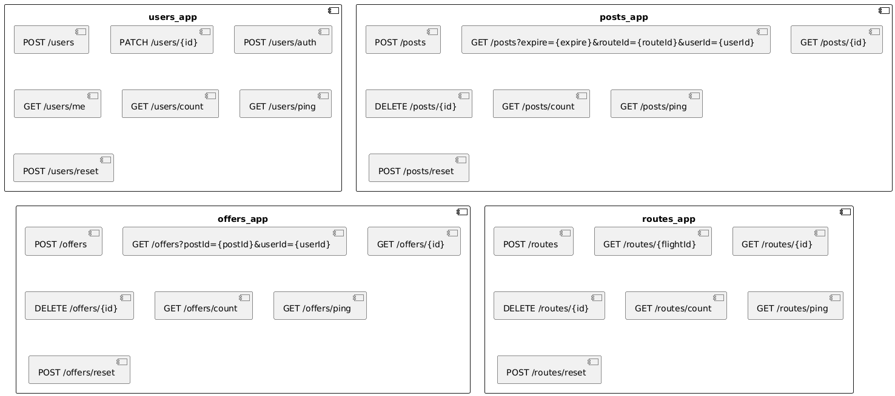

Esta sección describe los estándares técnicos y procesos de colaboración del equipo.
Utilizamos GitHub Flow:
main: Rama protegida que contiene código estable y listo para despliegue.feat/, fix/, docs/, chore/: Ramas para desarrollo de funcionalidades, correcciones o documentación.main.main.Seguimos el estándar de Conventional Commits:
feat: Nueva funcionalidad.fix: Corrección de errores.docs: Cambios en la documentación.chore: Tareas de mantenimiento o configuración.ci: Cambios en archivos de configuración de pipelines.refactor: Cambios en el código que no corrigen errores ni añaden funcionalidades.Una tarea se considera finalizada cuando:
/docs)./k8s).